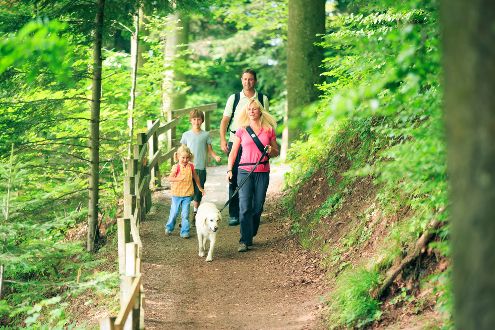

Bildbeschreibung auf Deutsch (Niveau B1)
Опис зображення німецькою мовою (рівень B1)
Я пишу наступне запитання ChatGPT:
Будь ласка, зроби опис німецькою мовою картини, на якій сім’я вирушає в подорож зі своїм собакою, рівень:
(B1)
Також, будь ласка, поділися зображенням і поясни всі речення українською мовою.
Я хочу, щоб після кожного німецького речення була українська перекладена версія.
Потім ChatGPT дає наступну відповідь:

Beschreibung:
Eine Familie mit zwei Kindern und einem Hund wandert gemeinsam durch einen bewaldeten Weg.
Сім’я з двома дітьми та собакою разом прогулюється лісовою стежкою.
Die Eltern tragen Rucksäcke, die Kinder feste Schuhe.
Батьки несуть рюкзаки, а діти взуті у міцне взуття.
Der Hund läuft vorneweg – es scheint ein mittlerer bis großer Vierbeiner zu sein.
Собака йде попереду — здається, це середній або великий пес.
Die Stimmung ist fröhlich und entspannt.
Настрій веселий і розслаблений.
Im Hintergrund sieht man hohe Bäume und ein leicht hügeliges Gelände.
На задньому плані видно високі дерева та трохи пагорбисту місцевість.
Das Wetter ist mild, vermutlich Frühling oder Herbst, denn die Kleidung ist weder sehr warm noch sehr luftig.
Погода м’яка, ймовірно весна або осінь, адже одяг не надто теплий і не надто легкий.
Weitere Details:
Die Kinder lachen und schauen sich gegenseitig an.
Діти сміються та дивляться одне на одного.
Die Eltern beobachten aufmerksam die Umgebung, vielleicht entdecken sie etwas Interessantes.
Батьки уважно спостерігають за навколишнім середовищем — можливо, вони помічають щось цікаве.
Der Hund ist ruhig, aber neugierig – er schnuppert am Boden.
Собака спокійний, але допитливий — він нюхає землю.
Alles wirkt harmonisch: Familie, Natur und Hund genießen den gemeinsamen Spaziergang.
Усе виглядає гармонійно: родина, природа і собака насолоджуються спільною прогулянкою.